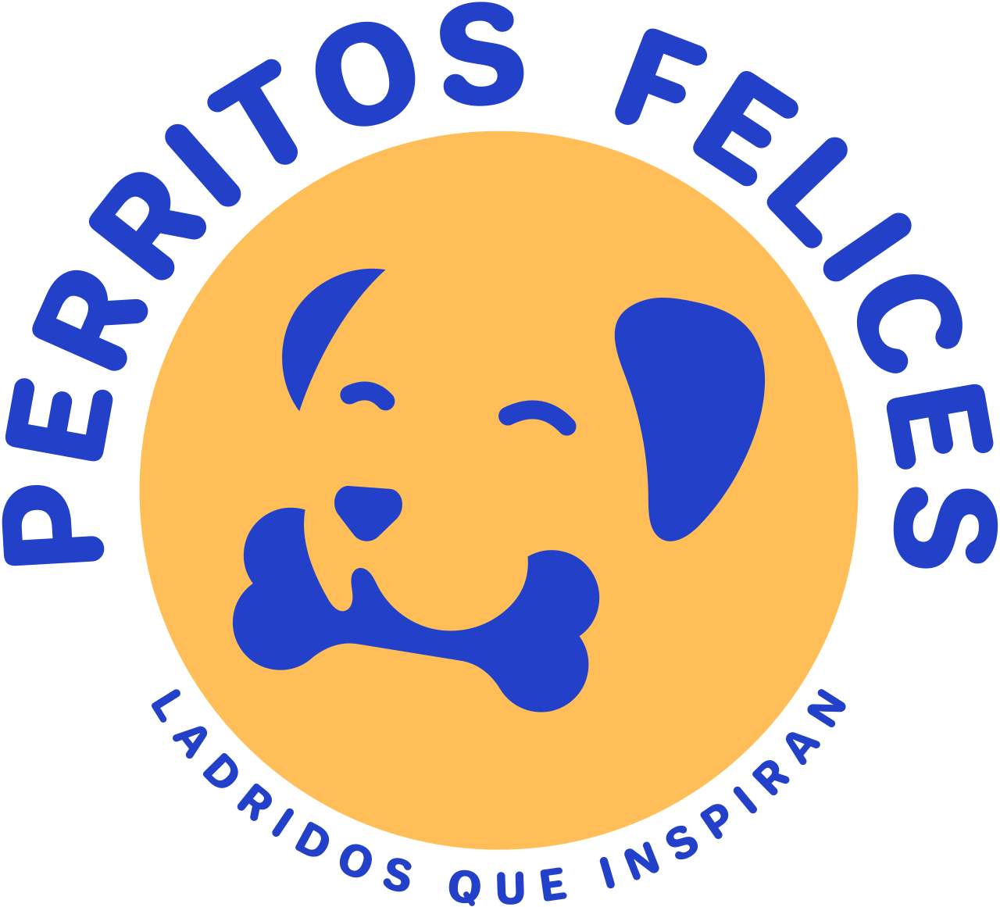

COMUNIDAD DE BIENESTAR CANINOGUÍAS PRÁCTICAS // SALUD, NUTRICIÓN & AMOR
Ciencia amable y vida digna para unperrito feliz.
Acompañamos a familias y tutores de todas las edades con guías claras, fáciles de aplicar en casa y escritas por especialistas. Descubre alimentación natural segura, educación sin castigos y nuestro directorio de veterinarias y guarderías verificadas.
Nutrición casera, lenguaje canino, vacunas y primeros auxilios
02 // TRATO AMABLE
0% Castigos
Espacios revisados libres de jaulas y collares de ahogo
03 // COMUNIDAD
12,500+
Familias cuidando mejor la salud física y emocional de su perro
EMBLEMA OFICIAL // PF-2026BIENESTAR & CONFIANZA

EDUCACIÓN AMABLE EN POSITIVO✦NUTRICIÓN NATURAL Y SEGURA✦DIRECTORIO LIBRE DE JAULAS✦SALUD PREVENTIVA PASO A PASO
01 / 04 — LOS 5 PILARES DE BIENESTAR
Todo lo que necesitas para entender y cuidar a tu perro paso a paso.
Explicamos la ciencia veterinaria en un lenguaje cálido, claro y práctico para que cualquier integrante de la familia pueda aplicarlo hoy mismo.
PILAR 01 — COMUNICACIÓN Y EMOCIONES4 GUÍAS PASO A PASO
Escuela para Humanos & Lenguaje Corporal
Antes de ladrar o asustarse, tu perro se comunica con la mirada, las orejas y la postura. Aprende a leer sus señales de calma y a ayudarlo cuando se queda solo en casa sin usar regaños.
NIVEL DE ESTRÉS: PASEO OLFATIVO TRANQUILO (AZUL) VS. PRISA-42% ESTRÉS
Ladridos que inspiran, directo en tu bandeja cada martes.
Enviamos una sola lectura semanal: recetas de snacks naturales seguros, análisis de comportamiento canino y nuevos centros verificados en el directorio. Cero spam.
CONVOCATORIA ABIERTA
¿Diriges un proyecto canino ético?
Si eres veterinario Fear Free, etólogo en positivo, estética sin amarres o guardería campestre, postula tu espacio sin costo.